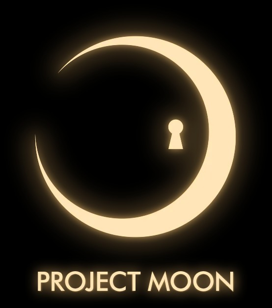

Three Songs By Mili
Mili is a Japanese independent music group that formed in August 2012, named after the Brothers Grimm fairy tale "Dear Mili." The lineup is five people: Cassie Wei writes the lyrics and sings, Yamato Kasai composes and plays guitar, Yukihito Mitomo plays bass, Shoto Yoshida plays drums, and Ao Fujimori handles the artwork and animation. They write in Japanese, English, Chinese, and French, sometimes switching between them inside a single song, and their material ranges from quiet piano pieces to heavily processed electronic tracks.
Rather than try to summarize a catalog that now runs past a hundred releases, this page covers three songs. These are the ones I would actually play for someone who asked me what the group sounds like. Each is linked so you can listen for yourself.
All three are tied to games by the Korean studio Project Moon. That is not a coincidence. The partnership between Mili and Project Moon has produced some of the group's strongest writing, because the songs are built around specific characters and have a story to push against.

1. SAIKAI
Released January 16, 2026 through HAAKO Records as a standalone single, running about five and a half minutes. It was written for Canto 9 of Limbus Company. The title is the Japanese word for reunion, and the lyrics move between English and Japanese.
This is the newest of my three picks and the one I have played most this year. The song opens quietly and spends a long time building, which is a risk for a track meant to play during a game sequence, but it pays off. Cassie Wei's vocal sits very close in the mix at the start and then gets buried under the arrangement as the song grows, so the ending feels crowded in a way that matches what the lyrics are describing. The writing leans on flower imagery, including a Japanese wildflower called the kawara-nadeshiko, and the song rewards looking that up afterward.
Listen: SAIKAI on YouTube
2. Rendezvous
The most recent release of the three, published October 4, 2026, again for Limbus Company, where it plays during the final boss sequence of Canto X. Cassie Wei wrote the lyrics, and the composition is credited to her along with Yamato Kasai.
What makes this one worth hearing is the form. The chapter it belongs to draws on French source material, and the song answers that with a tempo and feel borrowed from chanson and waltz rather than from the heavier electronic style the group often uses for climactic scenes. Setting a confrontation to a dance rhythm is a strange choice on paper. In practice the three-beat pull makes the whole thing feel inevitable, like the characters are being moved through steps they did not pick.
I also like that the band keeps experimenting this far into their run. Thirteen years in, a group with this large an audience could repeat what already works. Instead the newest single sounds nothing like the one before it.
Listen: Rendezvous on YouTube
3. Poems of a Machine
The seventh track on the album To Kill a Living Book, the companion record for Project Moon's game Library of Ruina, released October 29, 2021. It runs four and a half minutes and serves as the game's credits song. The arrangement is built on layered synthesizers over a drum line, and the lyrics are entirely in English.
This is the one I recommend to people who tell me they do not like the band's louder material. It is restrained almost the whole way through. The song is written from the perspective of something artificial reflecting on the books it has read, and it slips in a reference to electric sheep, which points at the Philip K. Dick novel Do Androids Dream of Electric Sheep. For a credits song it does a lot of work, because it reframes everything the player just finished rather than simply closing the file.
It is also a good argument for the group's game soundtrack work in general. A credits track is the easiest place to coast, and this one does not.
Listen: Poems of a Machine on YouTube
What The Three Have In Common
Lining these up next to each other, a few habits show through:
- Every one of them changes shape partway through instead of repeating a chorus to the finish
- The vocal is treated as part of the arrangement, layered and processed rather than left sitting on top
- Acoustic and electronic instruments share space instead of the song committing to one or the other
- The lyrics assume you are willing to look something up afterward, whether that is a flower, a novel, or a character
Where To Go After These
One thing worth clearing up: Mili is not only a soundtrack group. All three picks above happen to be commissioned work, but the band has a large catalog of their own songs with nothing attached to them. Tracks like world.execute(me); and 1000x1000 are good places to start, and their albums Miracle Milk from 2016 and Millennium Mother from 2018 are built out of original material rather than game tie-ins.